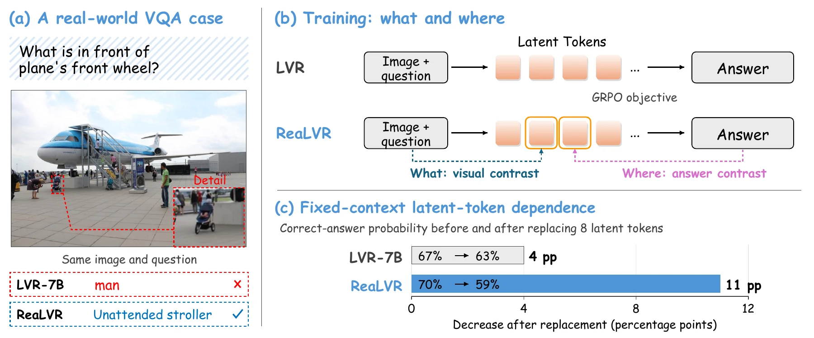
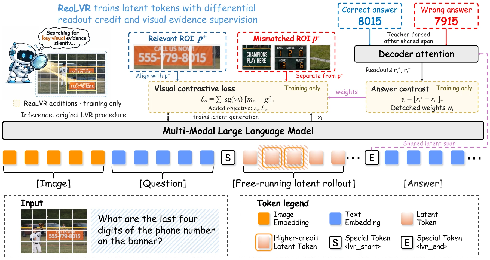
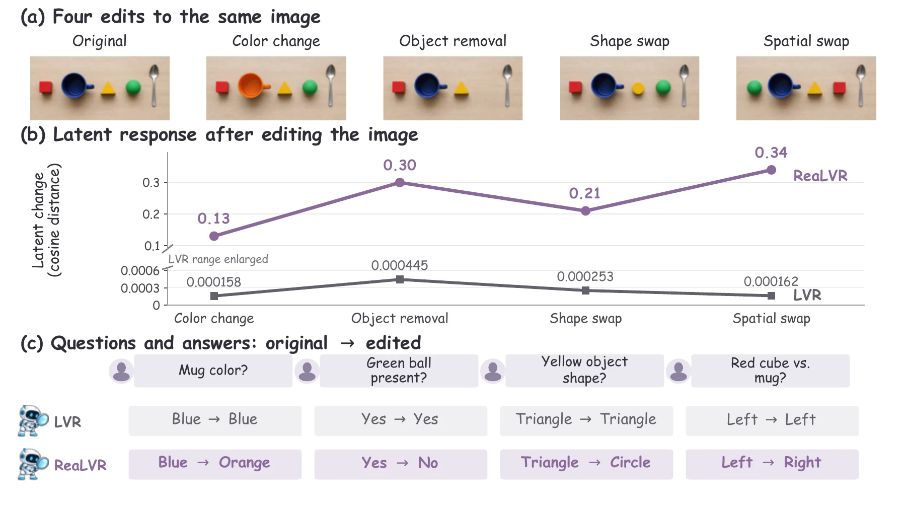

Learn on the model’s
own latent rollout.
Regenerate one autoregressive latent span with the current model. Keep gradients through the recurrence, before any answer tokens are supplied.
ReaLVR.
* Work done during an internship at Amazon AGI.
Swipe the diagram to explore the full training flow →
Visual contrast defines what to preserve. Answer contrast determines where to supervise.
Download GIFContinuous latent tokens offer a compact way for multimodal models to reason. But a correct final answer provides little guidance on which visual details those tokens should preserve.
We identify a latent evidence-credit gap: latent tokens respond only weakly to image perturbations that change the correct answer. ReaLVR brings explicit visual supervision to the model’s own free-running latent trajectory, with no change to its architecture or inference procedure.

A training objective that makes visual evidence matter inside latent reasoning.
Regenerate one autoregressive latent span with the current model. Keep gradients through the recurrence, before any answer tokens are supplied.
A cosine margin aligns the trajectory with a relevant visual prototype and separates it from the hardest mismatched prototype. Use a region annotation when available; otherwise, pool the image.
Read the same latent span with correct and model-generated wrong answers. Their positive attention difference, plus a uniform baseline, allocates detached supervision weights.

ReaLVR improves the average performance across the evaluated latent reasoning baselines.
Mean ± standard deviation for ReaLVR: 63.7 ± 0.2%, across three seeds. Bars show the unweighted five-task mean.
On Qwen3-VL-235B-A22B, ReaLVR improves all three evaluated benchmarks over LVR-SFT.
235B total / 22B active parameters. This evaluation covers three tasks; no five-task mean is reported.
Qwen2.5-VL-7B · accuracy (%) · three-seed mean
| Method | MMVP | BLINK | HRBench-4K | HRBench-8K | MME-RealWorld | Mean |
|---|---|---|---|---|---|---|
| LVR-RL | 64.2 | 53.6 | 69.6 | 64.4 | 50.1 | 60.4 |
| Monet-RL | 69.9 | 52.4 | 71.3 | 66.0 | 51.5 | 62.2 |
| ILVR-Stage2 | 69.4 | 56.8 | 71.0 | 66.9 | 50.3 | 62.9 |
| ReaLVR | 72.0 | 55.8 | 71.8 | 66.6 | 52.2 | 63.7 |
Selected latent reasoning baselines from Table 1. Bold indicates the best value in each column among the displayed methods.
Accuracy is only part of the story. We also probe whether latent representations respond to answer-changing visual evidence and whether answers depend on the selected tokens.
In a fixed-context diagnostic, replacing the eight most attended latent tokens reduces correct-answer probability by 4 percentage points for LVR and 11 points for ReaLVR. This measures local dependence with the remaining states held fixed.

Fixed-context interventions measure local dependence, rather than a fully rerolled reasoning process or proof of faithful reasoning. Visual targets are less spatially specific without region annotations, and inference still uses a prescribed latent-token budget.
@misc{xiao2026realvr,
title={Rethinking Latent Visual Reasoning: Grounding Latent Reasoning in Visual Evidence},
author={Xi Xiao and Tianchen Zhao and Youngeun Kim and Zhuowei Li and Linghan Xu and Jiaye Wu and Zheng Zhang and Xiang Xu and Xuanbai Chen and Farhan Tejani and Jakub Zablocki and Julia Xu and Yifan Xing},
year={2026},
note={Preprint}
}